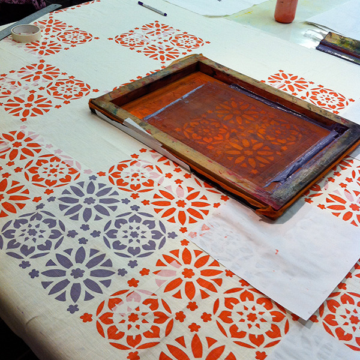
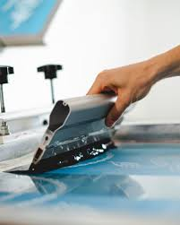

Traditional Textile Screen Printing
This methhod is extrensively employed in the fashion
and apparel industry for printing designs onto
garments,fabrics and accessories.

Advanced UV Screen Printing
UV screen printing has gained popularrity due to its
ability to cure instantly when exposed to ultraviolet
light, resulting in fast production.

Four-Color Process Printing
Also known as CMYK printing this method is widely
used for reprosucing dull colour images with a broad
range of tones and gradients.